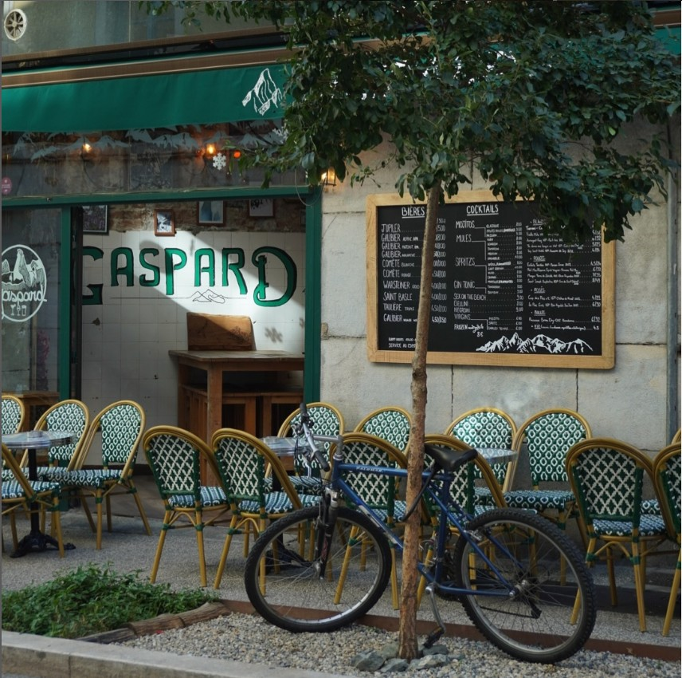

Crédit photo © Instagram @gaspard_grenoble

Le Gaspard est un bar ayant ouvert il y a peu à Grenoble, fin d'été 2023. Situé au 2 rue de Lionne, en plein centre-ville, la terrasse du Gaspard s'étire sur quelques mètres dans le prolongement du Pont Saint-Laurent, qui enjambe l'Isère.
Après quelques mois d'ouverture, le gérant du bar m'a contacté pour la réalisation du futur logo, dont il aurait besoin prochainement pour la communication sur les réseaux, ainsi que pour l'imprimer sur les pulls des employés, sur le store-banne abritant la terrasses, et sur les affiches.
Mots clés liés à ce projet :
Novembre 2023
Gérant associé du Gaspard
Essentiellement avec le gérant du bar
Le logo devait évoquer immédiatement l’univers de l’alpinisme et des sommets, en écho à la décoration du bar et à son ancrage grenoblois.
Pensé pour être décliné sur différents supports — enseigne, menus, réseaux sociaux, pull des employés — le logo devait rester mémorable, lisible et distinctif, même à petite échelle.
Le nom "Gaspard" est tiré entre autre de Gaspard de la Meije : le logo devait refléter une personnalité forte, capable de marquer les esprits et de porter l’héritage des grandes figures de la montagne, tout en restant accessible et chaleureuse, à l’image du bar lui-même.
Le logo final est l’aboutissement d’un travail d’exploration riche, nourri à la fois par les souhaits du gérant et par des recherches formelles variées. À l’origine, celui-ci avait peint à la main une silhouette de la Meije sur la vitrine du bar – un emblème fort, mais encore incertain. Cette montagne, véritable repère affectif pour lui, est devenue le point d’ancrage du projet.
L’illustration du sommet a été réalisée à partir d’une vectorisation fidèle de la Meije, puis stylisée pour conserver sa force évocatrice tout en assurant une bonne lisibilité. Le choix du noir et blanc s’est imposé naturellement : il renforce le contraste, affirme l’identité du lieu, et ouvre la voie à des usages futurs comme la gravure laser ou la pyrogravure – un clin d’œil aux matières brutes et chaleureuses qui évoquent l’univers montagnard.
Plusieurs pistes ont été testées : l’ajout de trois verres, initialement présents sur la vitrine, n’apportait pas la clarté attendue. De même, l’intégration de la mention "bar & planche" complexifiait inutilement la composition. Le cercle, quant à lui, a été décliné sous différentes formes – plus ou moins ouvert, ou même transformé en verre à pied pour souligner l’activité de bar – avant de revenir à une version plus simple, permettant au nom et au dessin de respirer pleinement.
Le logo retenu s’appuie sur une silhouette stylisée de la Meije, montagne emblématique choisie par le gérant pour sa valeur personnelle. Le nom du bar s’inscrit dans une calligraphie inspirée des anciennes signalétiques d’altitude, conférant au visuel un caractère à la fois authentique et accueillant. L’ensemble, contenu dans un cercle partiellement ouvert, remplit pleinement les objectifs fixés : évoquer la montagne, affirmer une identité mémorable et transmettre l’ambiance chaleureuse du lieu.
Bien que des tests utilisateurs formels n'aient pas été menés, le logo a été présenté à un panel restreint de clients réguliers et de collaborateurs du bar. Leurs retours ont été unanimement positifs, soulignant la pertinence de l'identité visuelle par rapport à l'ambiance et aux valeurs du Gaspard.
Ce projet m'a permis de renforcer mes compétences en conception de logos, en particulier dans l'adaptation d'une identité visuelle aux valeurs et à l'histoire d'un lieu. La collaboration étroite avec le gérant du Gaspard a été essentielle pour aboutir à un résultat authentique et mémorable.
Voici les challenges relevés et ce que j'en retiens :Merci d'avoir consulté mon profil !
N'hésitez pas à le partager, à télécharger mon CV ou à me contacter par mail pour tout renseignement complémentaire.
A bientôt !
CV en PDF (interactif) : 712 ko
CV pour AlternanceCV Alternance en PDF : 712 ko
Prenez contact par mail pour toute demande de renseignements, ou toute réflexion sur votre projet.